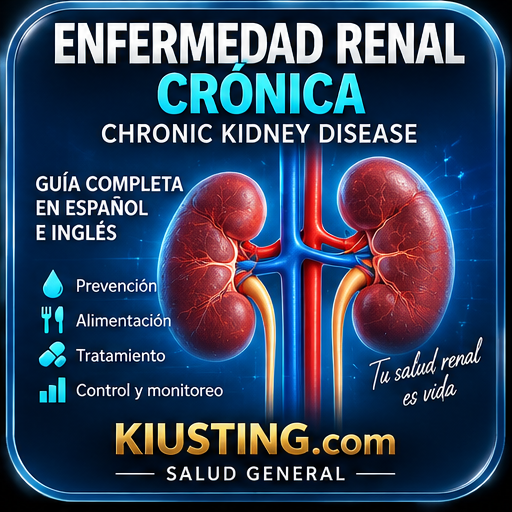
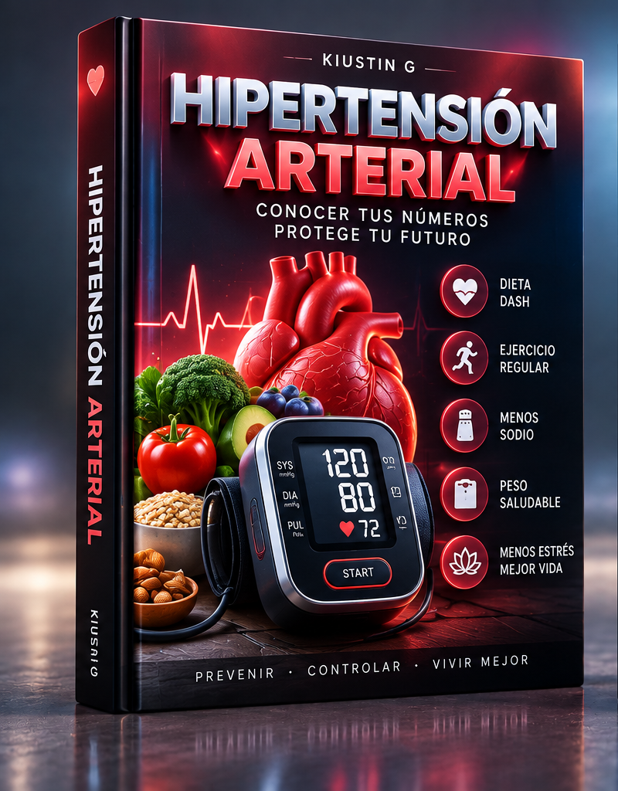
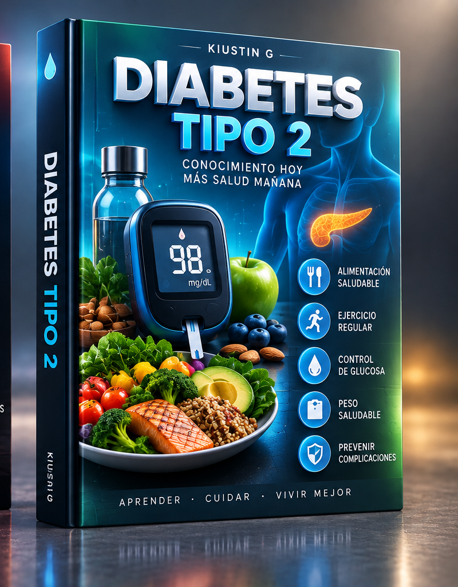
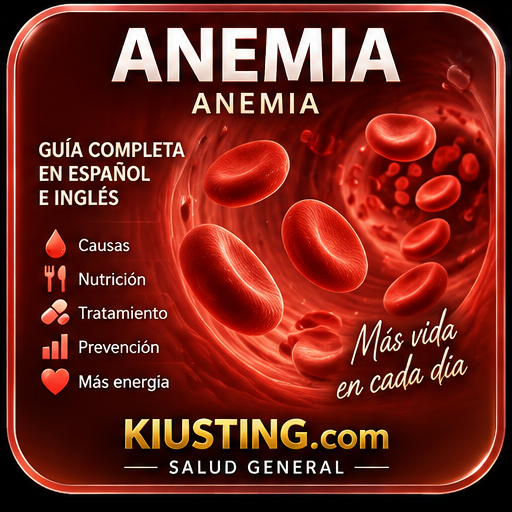
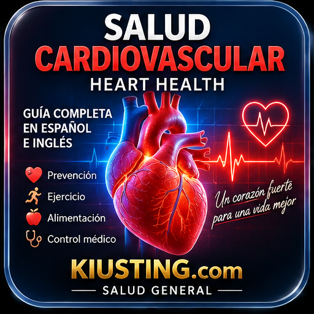

Riñón y Diálisis
El riñón es mi especialidad de cada día. En este hub reúno las guías educativas sobre enfermedad renal y sus causas más frecuentes, escritas de forma clara para pacientes, familias y cuidadores — y un recurso de entrenamiento para quienes trabajan en diálisis o se preparan para el CCHT.
🩺 GUÍAS DEL RIÑÓN Y SUS CAUSAS
Comprender la enfermedad renal empieza por sus dos grandes causas: la presión alta y la diabetes.

Enfermedad renal crónica
Etapas, síntomas, análisis clave (creatinina, filtrado, albúmina en orina) y cómo frenar su avance.
Riñón · Guía completa
Hipertensión arterial
La primera causa de daño renal: cifras, medición en casa, dieta DASH y prevención.
Corazón · Prevención
Diabetes tipo 2
La segunda gran causa: control de glucosa, riñón diabético y hábitos que protegen.
Metabolismo · Prevención
Anemia
Compañera frecuente de la enfermedad renal: causas, síntomas y el papel del hierro.
Sangre · Energía
Salud cardiovascular
Riñón y corazón se cuidan juntos: riesgos compartidos y prevención integral.
Corazón · Prevención